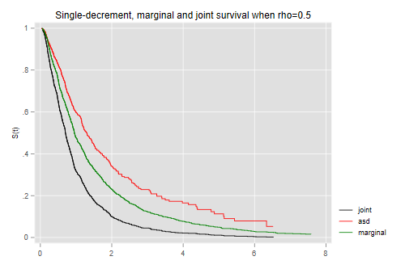
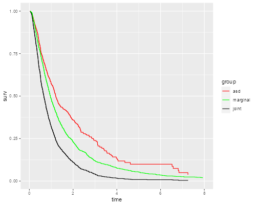

Here is a simple demostration of the difference between the marginal distribution of a failure time and and the associated single-decrement function, in a competing risks framework with two causes of failure.
We will simulate two correlated standard log-normal random
variables, with a user-supplied parameter rho. Call these
t1 and t2. The overall survival time
t is the miminum of the two. There is no
censoring.
We calculate three Kaplan-Meier estimates: the joint survival,
the marginal distribution of the (unobserved) time t1, and
the survival-like function obtained by censoring observations that fail
due to cause 2.
Here’s a Stata command an R function to simulate and plot the data:
. capture program drop simcomp
. program simcomp
1. args rho n
2. if "`n'" == "" local n 1000
3. clear
4. quietly {
5. set obs `n'
6. gen y1 = rnormal()
7. gen y2 = rnormal(`rho' * y1, sqrt(1-`rho'^2))
8. gen t1 = exp(y1)
9. gen t2 = exp(y2)
10. gen t = min(t1, t2)
11. gen j = (t1 < t2) + 1
12. stset t, fail(1)
13. gen tos = _t
14. sts gen os = s
15. stset t, fail(j == 1)
16. sts gen asd = s
17. gen tasf = _t
18. stset t1, fail(1)
19. sts gen ms = s
20. gen tms = _t
21. }
22. twoway line os tos if tos < 8, c(J) sort ///
> || line asd tasf if tasf < 8, lc(red) c(J) sort ///
> || line ms tms if tms < 8, lc(green) c(J) sort ///
> title("Single-decrement, marginal and joint survival when rho=`rho'")
> ///
> legend(order(1 "joint" 2 "asd" 3 "marginal") )
23. end
> simcomp <- function(rho, n=1000) {
+ meanlog = 0; sdlog = 1; tmax = 8
+ require(survival); require(dplyr); require(ggplot2)
+
+ # Simulate data
+ y1 <- rnorm(n, meanlog, sdlog)
+ y2 <- rnorm(n, meanlog + rho * (y1 - meanlog), sqrt(1 - rho^2) * sdlog )
+ t1 <- exp(y1)
+ t2 <- exp(y2)
+ t <- ifelse(t1 < t2, t1, t2)
+ j <- (t1 < t2) + 1
+
+ # Kaplan-Meiers
+ os <- survfit(Surv(t, j > 0) ~ 1) # overall survival
+ asd <- survfit(Surv(t, j == 1) ~ 1) # associated single decrement
+ ms <- survfit(Surv(t1, j > 0 ) ~ 1) # marginal survival
+
+ # ggplot
+ tdf <- function(sf,name) {
+ data.frame(time=sf$time, surv=sf$surv, group=rep(name,length(sf$time)))
+ }
+ km <- filter(rbind(tdf(asd,"asd"), tdf(ms, "marginal"),
+ tdf(os,"joint")), time <= 8)
+ ggplot(km, aes(time, surv, color=group)) + geom_step() + xlim(0, 8) +
+ scale_color_manual(name="group",
+ values=c(asd="red", marginal="green",joint="black"))
+ }
And here is the result when we try rho=0.5
. simcomp 0.5 . graph export simcomp.png, width(500) replace file simcomp.png saved as PNG format
> library(ggplot2)
> simcomp(0.5)
> ggsave("simcompr.png", width=500/72, height=400/72, dpi=72)
 
What would you expect if the correlation is closer to zero? Closer to
one? Try rho=0.2 and rho=0.8 to confirm your
intuition.